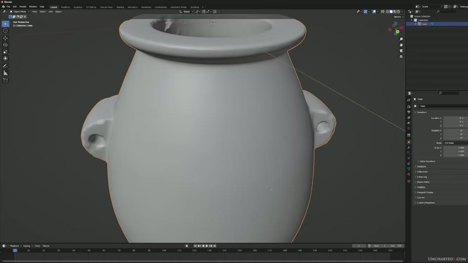
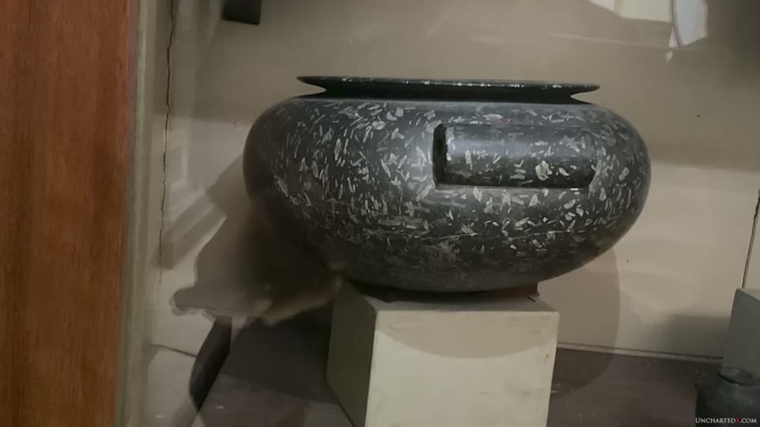
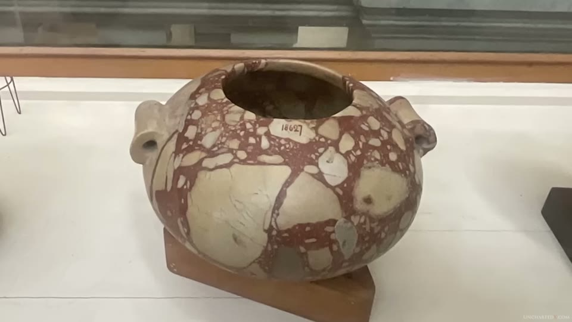
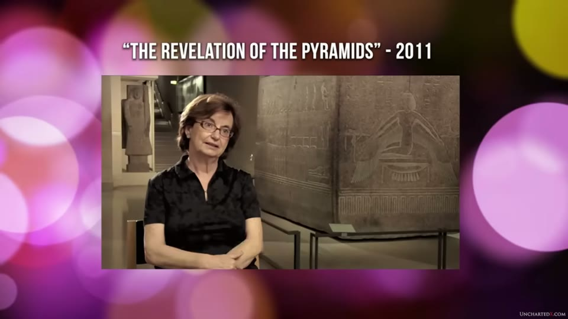
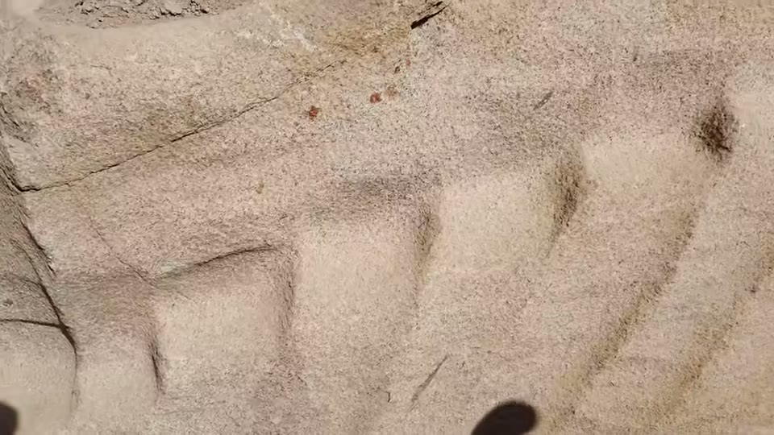
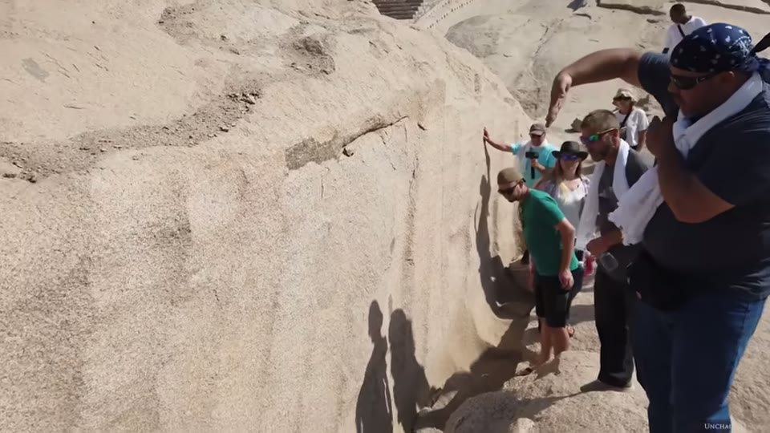

UnchartedX
Ancient Egyptian Vase Scan Update! STL file, More Analysis - and Between the Lug Handles
Ben · 54 min · watch on YouTube · summarised 2026-10-01
The first half is scripted and the second half is a recorded conversation. Up to about 19:00 Ben narrates alone; from 19:22 to 52:21 the video is a three-way discussion with the metrologists Alex Dunn and Nick Sierra and the vase's owner Adam Young, which he introduces as "additional discussion and context" and signs off with "I hope you all enjoy the rest of the interview". Everything below marks which half it comes from and who said it — with one caveat the picture makes necessary. The call has two panes: one labelled Ben - UnchartedX and one labelled Nick Sierra, and that second pane holds two men, with Alex Dunn unlabelled beside him. Attribution of a given sentence to Dunn rather than Sierra follows the flow of the conversation and cannot always be confirmed from the video.

What the second half of the video is, and who is in it.
It is a continuation: the scan it reports on was presented in a previous video that is not held in this collection, and Ben opens by recommending that viewers watch that one first. Where a figure originates there rather than here, this entry says so. The project's eventual summation is the vases entry, two years later.
The data is released
01:20–02:54. The most requested thing after the first video was the scan itself, and it is now downloadable from Ben's website as an STL or STEP file, shown on screen open in Blender. The owner, Adam Young, agreed to publish it.
He gives two reasons it matters 02:28–02:54: replicas can be machined from it and compared against the original for precision, and anyone can run the geometric analysis themselves rather than taking the reported numbers on trust. The challenge he issues later is built on that availability — "Go download the STL file, then get your sticks and stones together, document your process, and let's compare results" 13:19–13:29.

The scan released as a file anyone can open.
This is the point where the argument becomes checkable by people outside it, and the entry that records what happened next is on another channel: the vase-scan review entry, which follows this same vase — Young's PV001, scanned by Alex Dunn — through to 2025, when a CT scan returned more than five times as many vertices and the published analysis was revisited by researchers who had set out to confirm it. That entry disagrees with this one about what the data shows. Both are the same data.
The new measurement: between the lug handles
02:54–09:27. This is the video's own contribution, and the reason the area was chosen is an argument about process rather than about precision.
If the vase was turned, the lug handles cannot have been — a ridge or bullnose would have to be left standing all the way round and then cut back into two handles by some second operation, along with the strip of vase body between them 05:56–06:24. So that strip is the part of the object that a lathe cannot explain.
The measurement 08:14–08:41: a geometric cone was fitted to it from nearly 20,000 points, and the axis of that cone was found to be less than five thousandths of an inch off the centre line of the vase — the centre line itself being defined by the cylinder of the vase's mouth. For scale Ben gives a human hair as two to three thousandths.

The new measurement, and the surface it was taken from.
The slide carries the numbers more exactly than the narration does. Its table reads BETWEEN 2 HANDLES | Control ⌀ 0.000 | B | Meas 0.005 | No. Pts 19569, and the callout drawn on the vase gives the measured value unrounded as 0.0046 of an inch. So the point count is 19,569 and the deviation is four and six tenths thousandths, against "nearly 20,000" and "less than five thousandths" spoken. The control value is zero — coaxiality to datum B with a nominal of ⌀0.000 — so the figure reported is departure from perfect rather than a result against a design tolerance.
And the region the cone was fitted to is visible. It is drawn on the model as two ragged horizontal bands with gaps and broken edges, covering part of the surface between the handles rather than the whole of it.
The reasoning he attaches is about distortion rather than about tolerance: if the conical surface were out of shape anywhere, the axis derived from it would move, and the axis has not moved 08:51–09:02. From the previous video he restates that both lug handle cylinders were within single-digit thousandths of parallel and perpendicular to the two reference surfaces — the plane of the vase top and the axis of its neck — and parallel to each other "within the width of a couple of human hairs" 07:04–07:31.
His conclusion is stated at full strength: "I'm very confident in saying that there is absolutely no chance this could have been made by hammering on this thing with pounding stones or grinding on it with sand and flint chisels. The claim that it was is simply preposterous" 09:02–09:17.
Why the material makes it harder
09:58–11:31, scripted. Granite is not homogeneous the way steel or aluminium is. Inclusions of very hard material — quartz, corundum — sit in a matrix of much softer mica and hornblende, so a tool tip crossing the surface moves from soft to hard and back repeatedly, and a quartz inclusion may shatter or tear out rather than cut.
He gives two ways out and rejects both as implausible for hand work: either the tool is held so rigidly and cuts so effectively that the material does not matter, or the force on the tip varies "at an almost microscopic level" with what is under it.


The material problem: hard pieces set in softer stone, cut through cleanly.
Museum vessels are shown while he says it, including one cut from a breccia of large pale clasts in a red matrix, with the accession number 18627 painted directly onto its shoulder and legible. No number, museum or catalogue reference is spoken for any of the vessels in this sequence.
The two industries, in a burial
03:34–05:21, scripted, and the strongest part of the first half because it is about where the objects were found rather than about how they were made.
Large numbers of precise hardstone vases come from predynastic and early dynastic burials, and they are displayed in museums beside the other grave goods — bone and bead ornaments, and hand-built pottery. One such pot, he says, is quite clearly an imitation of the hardstone vase it was found with, "and it's even been painted up to look like granite".

The two industries in one case - and what the museum says about them.
The case has a museum label beside it, legible on screen, and it is not read out. It is headed "Late Gerzean (Naqada III) Period (ca. 3250 BC–3100 BC)" and ends:
"The beginning of the First Dynasty marks the end of this era, which marks the transition of ancient Egypt from a series of farming communities to a true state. Pottery becomes simple and mass produced with artistic effort channeled into producing elaborate stone vessels in great quantity for the elite."
The museum's account of the same two objects is that the pottery got cruder because effort moved into stone vessels, made in quantity in that period. The narration's account of them is that the pottery is an imitation of an object its makers inherited. Both are on the screen at once.
The inference he draws is inheritance: if the people buried with these objects did not make them, they found them, and whoever did make them had capability that existed earlier and then disappeared. He notes that mainstream Egyptology agrees on part of this — Djoser's 40,000 to 50,000 vessels under the Step Pyramid at Saqqara are acknowledged as collected from older burials. The same museum wall text is read out directly in the vases entry, which quotes the Imhotep Museum describing the vessels as inherited heirlooms.
In the conversation 22:00–22:30 Adam Young adds something about that museum: the display he is describing is at Saqqara, and the museum has been closed for renovations for a couple of years, which he says began after videos appeared showing what its labels said. He notes there is a hole in the floor and something underneath. No documentation of the closure or its reason is shown.
Provenance, and the answer offered
13:30–17:07, scripted. The objection Ben says is worth answering is that the vase's provenance is unknown. His response has three parts.
The vase's own history, as he gives it: in a private collection "as far as I know, since the 1980s", and he questions whether the precision could have been produced in the 1980s. No documents, bill of sale or collection record appears on screen.
The access argument. Requests to study museum vessels have been refused, and curators of Egyptian collections are generally Egyptologists, who decide who studies what. Going to private collectors is, on his account, the only route left. A clip is played 14:31–14:43 of someone saying "If you're asking about the analysis of the inside of the vases, we only dealt with the contents. We haven't worked on the techniques used to make the vases." The speaker is not named in the narration, and the editor's caption gives only the film: "THE REVELATION OF THE PYRAMIDS" – 2011.
The same clip was used three years earlier with more on it. In the machining entry the identical shot carries two burned-in captions naming the speaker as Guillemette Andreu-Lanoë, Egyptian Antiquities Curator, Musée du Louvre in Paris, and the source as 'THE REVELATION OF THE PYRAMIDS' – JACQUES GRIMAULT – 2010. Here the speaker's name and the director are gone and the year reads 2011.

The evidence offered that the expertise is not being applied.
The counter-offer, which is the substantive part: "If you want to question the provenance of this vase, then please let's analyse any of the hundreds of examples currently ensconced in display cabinets gathering dust, those with impeccable provenance." He restates it as a standing request to curators and owners 17:07–17:33, and frames scanning as preservation as much as analysis.
In the conversation 19:48–20:40 Adam Young describes how such objects reach private hands at all: typically a European family with a nineteenth-century diplomatic connection to Egypt, an estate sale, then auction. He distinguishes "provenance" from "pseudo-provenance", says more provenance means more value, and that owners are sometimes reluctant to document a chain for fear of a government reclaiming the object. His own belief is that many came originally from Saqqara.
The scanner, the point counts, and what was not scanned
37:12–42:10, conversation. This is where the method is described, and the participants qualify it themselves.
- The scan. Adam Young arranged it through a company called Capture 3D in Connecticut, using what Nick Sierra believes was a GOM structured-light scanner, accurate to about a thousandth of an inch — "more accurate than we would need for a project like this". He adds that nobody is applying calibration rules to ancient artefacts yet.
- The age of the data. The vase was scanned four years before this video, which surprises Ben on camera 42:10–42:13. Nick Sierra says scanning technology has improved since and they would like to redo it.
- The point counts. The two lug handle cylinders were built from 4,200 and 3,800 points. The comparison offered is that a coordinate measuring machine in ordinary industrial use would take six to eight.
- And the caveat they volunteer 39:50–40:30: "the fewer points you take, honestly, the more accurate your geometry is going to appear." Nick Sierra follows it with "we could make decisions to make the geometry appear more precise than it is", and says they did not.

The lug handle figures as displayed, and the gaps in the scan data.
The lug handle slide gives the full set, and the narration reads two of the six. Its table: lug handle 1 parallel to datum A within 0.001 and perpendicular to datum B within 0.003, from 4,235 points; lug handle 2 parallel to A within 0.005, parallel to datum F — which is lug handle 1 — within 0.007, and perpendicular to B within 0.003, from 3,802 points. The spoken version is "4,200 on one and 3,800" and "7,000 parallel to each other"; the rest is on screen only.
The mesh shows where the scan has no data. Around the inside of the vase mouth the model carries unfilled black holes and a notch missing from the rim, and the shaded region marking datum B — the mouth cylinder that defines the vase's centre line, and so the reference for the figure in the previous section — covers the lower part of the bore rather than all of it.
One result is not from the scan at all 41:27–42:01. With the vase in the shop on a rotary table and a dial indicator reading to five or ten ten-thousandths zeroed on one lug handle, the vase was spun 180 degrees and the indicator read zero on the other. Nick Sierra says the bottom plane of the vase is therefore also extremely flat — and that they were not able to get a scan of it. He mentions having a video of the test on his phone. It is not shown.
What the metrologists say the precision implies
27:28–32:44, conversation, and the part with the most argument in it.
Design intent. Nick Sierra explains the modern practice: a part is designed in CAD as "nominal geometry" — what it would be if perfect — and tolerances are then applied unevenly, tight where function demands it and loose where it does not. His observation is that once a process can hold the tight tolerance, applying it everywhere costs nothing extra and makes a better part.
Ben's long-standing position is that precision implies function, and that this is awkward for a vase: "it becomes more difficult to explain a function when you talk about a statue or a vase or something that is relatively artistic and decorative." Sierra's answer reframes it — "the strongest argument for the nature of the precision in these vases is that the tool is incapable of producing anything less precise" — which puts the precision in the tool rather than in the object's purpose.
The verification problem, which Sierra raises and nobody resolves 30:54–31:25: holding a tolerance is one thing, knowing you have held it is another. "Clearly the Egyptians were holding these tolerances consistently and they had to have had a separate system as well to verify." No candidate for such a system is proposed.
And the test that would settle whether these were standardised products 32:15–32:44: scan many more, and overlay them. Sierra names scanning every Ramesses head and overlaying the results to see whether they are identical "as we assume them to be" as the measurement he would most like to make.
Alex Dunn on the tool marks 33:35–34:43. He says the piece shows the evidence of a single-point turn, consistent with what Petrie and his own father wrote, and that the depth of the tool impressions implies high speed and pressure rather than slow hand-rubbing. He flags the status of this himself: "it can be assumed, we don't have evidence, we're not there, but just pure speculation, that they were continuously changing their tool pressure and speed."
Petrie recurs twice more: a vessel he measured down to one hundred and fortieth of an inch thick 34:56–35:00, and corundum inclusions in granite vessels in the British Museum, with corundum put at about 9 on the Mohs scale 35:24–35:56. Dunn says there is "a mostly corundum vase in the museum somewhere". It is not located, named or shown — the same object is still unlocated two years later in the vases entry.
The Serapeum and the scoop marks
42:31–52:00, conversation, and this is where the discussion leaves the vase.
Inside the boxes. Ben reports from recent visits that not all the Serapeum boxes are finished inside, and some have corners that are not complete. The observation he offers is that divots and imperfections on an inside surface appeared to him to correspond to scoops on the outside, as though wall thickness mattered more than the inside surface did. He speculates that polishing may have served to reveal cracks, by analogy with inspecting metal, and Nick Sierra draws the parallel with X-raying cast turbine blades for voids. Nothing is measured; the correspondence is "to our eye". The site is the Serapeum entry.
The angle measurements. Ben describes videos in which the outside angles of the boxes are measured and found not to be 90 degrees, and his answer is that the outside is not where the precision was sought. He also says the protractor in those videos is tilted and not zeroed. Neither the videos nor their makers are named.
The box Mariette blasted 45:41–46:17. Alex Dunn names the box his father writes about as his first target for scanning, and identifies it as "the one that looks like they almost used explosives to get into it". Ben's reply: "Well, they did." Both attribute it to Mariette, and Ben adds he was not the only one to use dynamite or gunpowder.
The scoop marks 47:05–50:30, which connects to the unfinished obelisk entry. Ben has scanned many of them with an iPad, and says plainly that iPad LiDAR is "not exactly accurate". What he reports from them is a shape claim: the scoops vary in size between areas but are fairly consistent within an area, and in places a ridge line between adjacent scoops runs continuously down a wall, across the floor and back under the overhang of an obelisk. His argument is that pounding would not leave that — the next thing a worker does is knock down the high spot.
Nick Sierra's interest is different and more specific: scan a scoop in its entirety, find the tangential breaks, and show whether the centre point of the rotation producing it moves as the scoop progresses. That measurement has not been made.


The marks the conversation describes but does not measure.
What they say the Serapeum would actually need 51:16–51:47. Not structured light. Sierra expects the surfaces on the box Dunn's father inspected to be flat within "tenths" — ten-thousandths of an inch — and says an instrument accurate to a thousandth cannot measure that; an interferometer would be required. Scanning the Serapeum, on their account, would be for the digital record rather than for the geometry.
The remark that sets the standard
46:18–46:44. Nick Sierra, unprompted, on how to approach the artefacts:
"It is interesting how some folks will enter the field without a full understanding of measurement, accuracy, precision. With this project, I don't want to fall into the fantasy that some tend to do when investigating these artifacts, because the truth is more important than what we may believe these people were doing. And we have to build to that."
Ben agrees and extends it to himself: "I don't mind if I get proven completely wrong with all of my theories and my speculation that I put out there in some of the videos, as long as it gets us closer to the truth."
What you can check yourself
- Download the scan. The STL and STEP files are published, and the geometric claims — the cone axis within five thousandths, the lug handle parallelism, the point counts — are all claims about a file anyone can open. This is the rarest property an argument in this field has.
- The report in both unit systems. Ben states the vase report is available in imperial and metric on his website 16:25–17:05, in answer to complaints about thousandths of an inch.
- The burial displays. Hardstone vessels shown beside the pottery imitating them are on public display in Cairo and elsewhere, and the painted-to-look-like-granite pot is photographable.
- Djoser's vessels. The figure of 40,000 to 50,000 under the Step Pyramid, and the museum text describing them as inherited, are both checkable against the published excavation literature and against the museum.
- Petrie's thin vessel. A measurement of one hundred and fortieth of an inch is in Petrie's published work and can be located.
- The Serapeum angles. The dispute about whether the outside corners are square is a dispute about measurements a visitor with a protractor can repeat, and both sides have made videos of it.
- Corundum in granite vessels. British Museum pieces with large crystalline inclusions are named as the example; whether a mostly-corundum vase exists is checkable against museum catalogues.
What the video does not settle
- The headline figures come from a video not held here. The lug handle parallelism, the datum structure and the original tolerance set are restated rather than derived, and the earlier presentation of them is not part of this collection. Only the cone between the handles is measured here for the first time.
- No measurement is taken on camera. The numbers are read off slides prepared by the metrologists. The one instrument reading described — the dial indicator across the lug handles — was taken in a workshop, is recounted from memory, and the phone video of it is mentioned but not shown. The bottom plane said to be extremely flat was never scanned.
- The scan data is four years old at the time of the video, taken on a scanner accurate to about a thousandth, and the participants say both that better instruments now exist and that calibration practice for ancient artefacts does not.
- The surfaces the figures come from are partial. On the slides, the fitted regions are drawn on the model as patches: two ragged bands between the handles, and areas on each lug rather than whole cylinders. The mesh also carries unfilled holes around the inside of the mouth, which is the feature defining datum B and therefore the reference for the headline number. How the missing data was handled is not discussed.
- The museum's own label is not answered. The case used to show the pottery imitating stone carries a label saying elaborate stone vessels were produced in quantity for the elite in that period. It is legible on screen for several seconds and the argument running over it is that the vessels were not produced then at all.
- The clip offered as evidence of expert indifference has been re-captioned. It is twelve years old at this point, and the speaker's name and the film's director, both of which the channel had previously burned into the same shot, are absent here.
- Point density cuts both ways and they say so. More points make a surface look less perfect; fewer make it look better. They state they did not take advantage of that. There is no independent audit of the fitting in this video.
- The single-point-turning reading is labelled speculation by the person making it. No tool is proposed, no experiment is run, and the inference from impression depth to cutting speed is not supported with a figure.
- Provenance is asserted, not documented. "Private collection since the 1980s, as far as I know" is the whole chain; nothing is produced to support it, and the counter-offer to scan museum-provenanced pieces had not been taken up at this point.
- The unnamed curator clip is played as evidence that the relevant expertise is not being applied, but the speaker, the institution and the occasion are not given.
- The Saqqara museum closure is reported with a suggested connection to Ben's videos and no documentation of either the closure's date or its stated reason.
- The Imhotep-and-alabaster account — that a procedure was devised to imitate the hardstone vessels in a softer material, after which the precise ones disappear from the record — is offered as a reading of the sequence, with no inscription, text or dated object cited for it.
- The Serapeum wall-thickness observation is visual. Inside divots said to correspond to outside scoops were judged by eye on site; no thickness was measured anywhere.
- The scoop-mark ridge lines are described, not plotted. The scans behind them are iPad LiDAR, which Ben says is not accurate enough, and the measurement that would test the claim — whether the centre of rotation moves along a scoop — is named as future work.
- The reaction is characterised without being quoted. Objections are described as questioning provenance, attacking motives, or hand-waving, and the engineering response is reported as "radio silence"; no specific objection, author or exchange is shown.